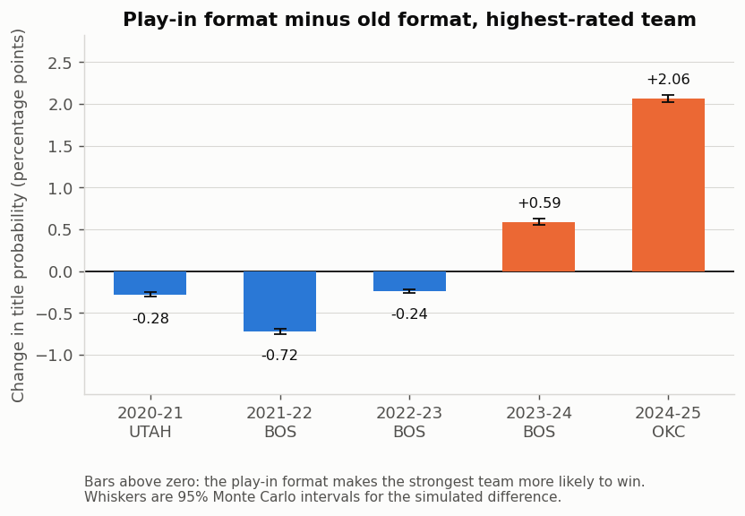
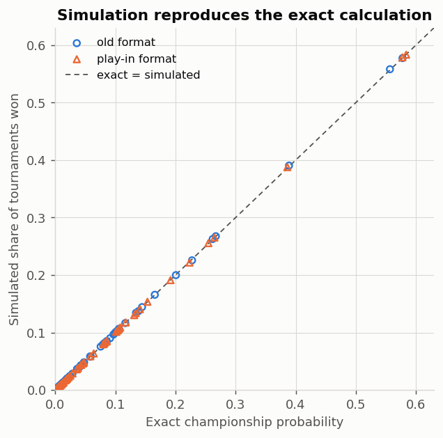
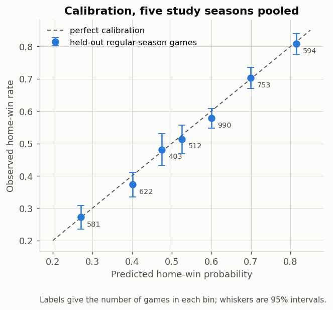
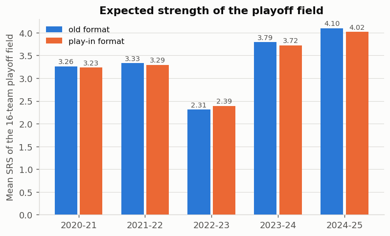
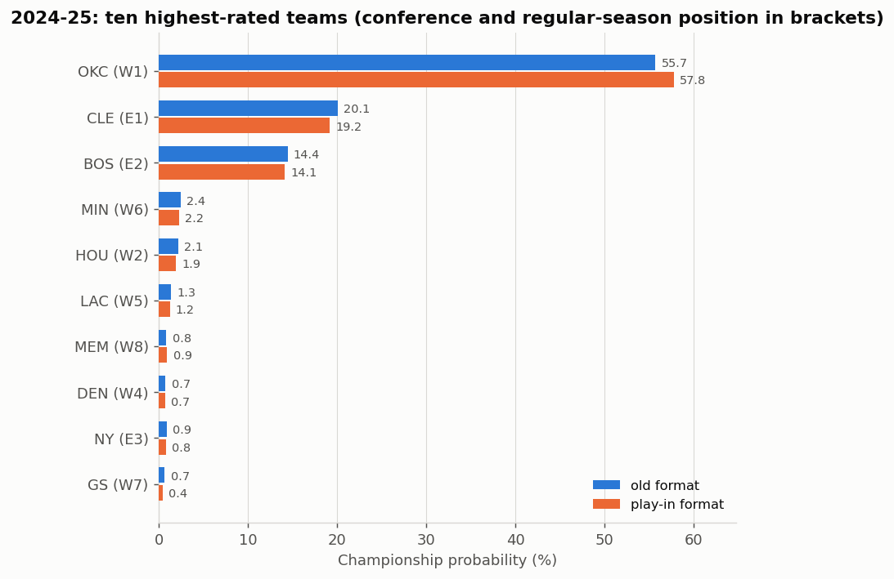
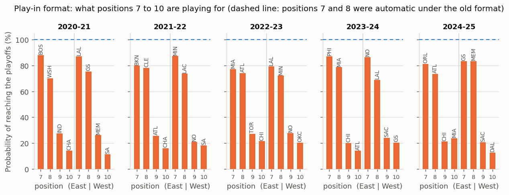
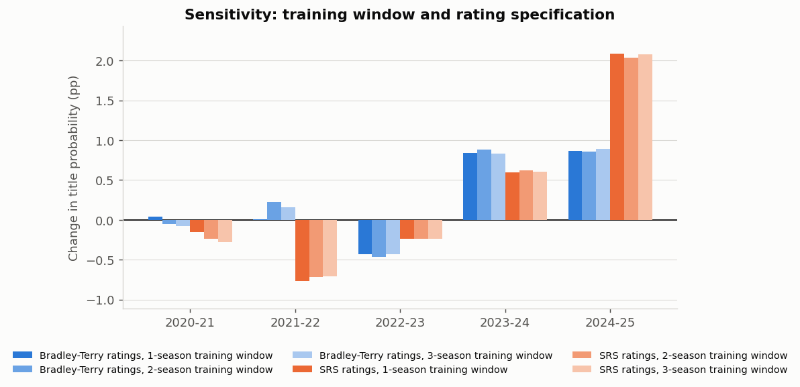

A model-based counterfactual over five NBA seasons, 2020-21 to 2024-25
Generated 21 September 2026 from NBA_PlayIn_Whiteboard_Data.xlsx.
Every figure in this report is produced by python run_all.py; nothing is
typed in by hand.
Holding each season's standings and team ratings fixed, the play-in tournament changed the highest-rated team's probability of winning the championship by +0.29 percentage points on average over the five seasons (simulated: +0.28 pp, Monte Carlo standard error 0.008 pp). The effect was positive in 2 of the five seasons and negative in 3. Every season's effect is smaller than one percentage point except 2024-25, at +2.08 pp.
The sign is not a property of the play-in format. It depends on one thing: whether the play-in tends to put a stronger or weaker team into the seed that the best team has to beat.
Two other model-derived quantities are reported alongside: the expected rating of the champion and the expected rating of the sixteen-team playoff field. Both move by small amounts, and like the headline number they move in different directions in different seasons.
This is a counterfactual inside a model, not the causal effect of the policy. Standings, ratings and the game model are held fixed, so nothing about incentives, resting, injuries or roster decisions is represented. See section 12.

Holding regular-season standings and estimated team strengths fixed, does the NBA play-in tournament increase the probability that the highest-rated team wins the championship?
Five seasons are studied: 2020-21, 2021-22, 2022-23, 2023-24, 2024-25. For each one, the same standings, the same ratings and the same game-probability model are put through two tournaments:
| Old qualification format | Play-in format | |
|---|---|---|
| Seeds 1-6 | positions 1-6 qualify | positions 1-6 qualify |
| Seed 7 | position 7 | winner of 7 hosts 8 |
| Seed 8 | position 8 | winner of (7/8 loser hosts 9/10 winner) |
| Teams involved | 8 per conference | 10 per conference |
"Strongest" always means the highest full-season SRS rating computed before that season's postseason. The actual champion is never used to define it.
It isolates one channel: the bracket. Because the standings and ratings are frozen, the comparison answers "given these teams and these strengths, what does the extra round do to the best team's chances?" It does not answer "what happened to the NBA because the play-in exists?", since a real policy also changes how teams behave during the season.
| Source | Use | Retrieved |
|---|---|---|
NBA_PlayIn_Whiteboard_Data.xlsx |
the study's input: 9,519 regular-season games 2017-18 to 2024-25, 150 team-seasons, published reference values | supplied |
| sportsdataverse/hoopR-nba-data schedule archive | independent rebuild of the game table | 2026-09-21 |
| ESPN standings API | win-loss records and scoring totals, five seasons | 2026-09-21 |
| ESPN game summary API | box scores for 21 individual games under investigation | 2026-09-21 |
| Basketball-Reference season totals | third source for the 12 disputed scoring totals | 2026-09-21 |
| NBA.com play-in rules | format verification | 2026-09-21 |
| Check | Status | What was found |
|---|---|---|
| Game IDs unique | pass | 9519 games, 0 duplicated IDs |
| Games per season | pass | counts 2018:1230, 2019:1230, 2020:1059, 2021:1080, 2022:1230, 2023:1230, 2024:1230, 2025:1230; all match the published schedule |
| No repeated date/home/away pairs | pass | 0 repeated matchup-days |
| One team plays at most one game per day | known issue | 1 team-day(s) hold two games: game IDs 401161536, 401161543. Game 401161536 (Golden State 115, Phoenix 99) is dated 2020-03-01 in the archive but was played on 2020-02-29 (confirmed against Basketball-Reference box-score index). The score is correct; only the date is off by one, and it affects nothing but the day on which that 2019-20 result enters the running ratings. |
| Team identities | pass | 30 distinct team codes: ATL BKN BOS CHA CHI CLE DAL DEN DET GS HOU IND LAC LAL MEM MIA MIL MIN NO NY OKC ORL PHI PHX POR SA SAC TOR UTAH WSH |
| 30 teams every season | pass | min 30, max 30 |
| Season labels match dates | pass | 2018: 2017-10-17..2018-04-11; 2019: 2018-10-16..2019-04-10; 2020: 2019-10-22..2020-08-14; 2021: 2020-12-22..2021-05-16; 2022: 2021-10-19..2022-04-10; 2023: 2022-10-18..2023-04-09; 2024: 2023-10-24..2024-04-14; 2025: 2024-10-22..2025-04-13 |
| Cup championship games excluded, other Cup games kept | pass | both Cup finals absent (2023 In-Season Tournament final (LAL 123, IND 109); 2024 Cup final (MIL 97, OKC 81)); 132 of 132 other Cup games retained, because they do count toward the regular-season standings |
| No All-Star or postseason games in the regular-season table | pass | 0 non-regular-season game IDs found in the sheet |
| Workbook game table reproduced from the hoopR archive | pass | 9519 games matched; 0 only in the workbook, 0 only in the archive, 0 score differences, 0 date differences, 0 neutral-flag differences |
| 2020 bubble games treated as neutral | pass | 88 bubble games, 88 neutral in the model; source flag marked 0 of them neutral |
| Other neutral-site games | info | 17 non-bubble neutral games at 7 venues (see audit_neutral_sites.csv) |
| Win-loss records match ESPN standings | pass | 150 team-seasons checked against a freshly retrieved standings feed; 0 mismatches |
| Scoring totals: game log vs standings feed | known issue | 12 of 150 team-seasons differ, by 1-3 points; the workbook reports the same 12 |
| Third source (Basketball-Reference) on the 12 scoring gaps | resolved | 12 of 12 team-season totals match the summed game scores exactly, so the ESPN standings aggregate is the outlier and no game score needs correcting |
| Scoring discrepancies traced to individual games | resolved | 21 candidate games checked against ESPN box scores; 0 could not be checked |
| Regular-season positions 1-15 restored | pass | ranks 1-15 complete in all 10 conference-seasons; 40 positions 7-10 confirmed from opening play-in matchups; 17 team-seasons where the stored ESPN playoff seed differs from the regular-season position |
| No future information in the pregame features | pass | 7048 published feature rows; prior-game counts recomputed from the game table: 0 disagreements, 0 rows below the 20-game threshold |
Twelve of 150 team-season scoring totals in the ESPN standings feed differ from the sum of that team's game scores, by one to three points. They are not scattered: they pair up. In 2020-21, Indiana's points-against is two higher in the game log while Dallas's points-for is two higher by the same amount, which can only come from a game between those two teams. That logic narrows the whole set of twelve to 21 candidate games.
All 21 candidate box scores were pulled from ESPN's game summary endpoint: every one agrees with the game table. Basketball-Reference was then checked as a third, fully independent source: all 12 team-season totals match the summed game scores exactly, not the standings feed.
Conclusion: the game scores are right and the ESPN standings aggregate is the outlier. No score is corrected, no game is dropped, and the analysis uses the game-level scores. Section 11 shows what would happen if the standings totals were used instead: at most 0.020 pp on any season's result.
Game 401161536 (Golden State 115, Phoenix 99) is dated 2020-03-01 in the
archive, which puts two Golden State games on the same day. Basketball-Reference's
box-score index shows the game was played 2020-02-29. The score is right; the
date is one day late. It sits in 2019-20, a training season only. Moving it to
its true date changes no season's result by more than
0.042 thousandths of a percentage point.
For every team i, with mbar_i its average scoring margin, n_i its number of games and O_i the list of its opponents (one entry per game played):
R_i = mbar_i + (1/n_i) * sum over j in O_i of R_j, sum over i of R_i = 0
Multiplying through by n_i turns this into a linear system,
(diag(N) - C) R = m, where C[i,j] counts the games between i and j and
m_i is team i's total scoring margin. It is solved with the sum-to-zero
constraint. The rating is a team's scoring margin adjusted for how strong its
opponents were. A repeated opponent is counted once per game, which is what
makes the adjustment right for unbalanced schedules.
These ratings reproduce the workbook's to within 1e-13, and they satisfy their
own defining equation to within 1e-7 (tested in tests/test_ratings.py).
The same system is re-solved once per game date using only games on strictly earlier dates, so a game can never help predict itself. A game enters the training set only if both teams already have 20 games that season, which keeps ratings built on five-game samples out of the fit. Of 9,519 games, 7,048 pass that filter. Recomputed independently here, all 7,048 match the workbook's published features exactly.
That threshold is a real choice with a cost: it throws away roughly the first six weeks of every season. It is kept because early ratings are extremely noisy - before 20 games a team's SRS still moves by several points per game - and because it was specified before any result was looked at.
P(A beats B) = 1 / (1 + exp(-(beta * (R_A - R_B) + h * H)))
H = +1 if A is at home, -1 if A is away, 0 at a neutral venue
Fitted by maximum likelihood on completed games from earlier seasons only, with
beta >= 0 and no separate intercept, so two equally rated teams at a neutral
venue are a coin flip by construction. The prespecified training window is the
three completed seasons before the season being studied; one- and two-season
windows are reported in section 11 as checks, never as a choice.
| Season | Highest-rated team | SRS | Position | Conference | beta | h | Training games |
|---|---|---|---|---|---|---|---|
| 2020-21 | UTAH | 8.96 | 1 | Western | 0.1148 | 0.3378 | 2,593 |
| 2021-22 | BOS | 7.02 | 2 | Eastern | 0.1102 | 0.2918 | 2,441 |
| 2022-23 | BOS | 6.38 | 2 | Eastern | 0.1077 | 0.2000 | 2,441 |
| 2023-24 | BOS | 10.74 | 1 | Eastern | 0.1114 | 0.2439 | 2,613 |
| 2024-25 | OKC | 12.70 | 1 | Western | 0.1129 | 0.2225 | 2,767 |
beta is close to 0.111 in every season: one point of SRS is
worth about 0.111 in log-odds, so a five-point rating edge
makes a team roughly 64% to win a
neutral game. h between 0.20 and 0.34 means home
court is worth between 1.9 and
2.9 points of rating - in the same range as the
familiar "home court is worth about two or three points" rule.
No model was chosen because it produced a preferred tournament answer. The window was fixed in advance, and the alternatives are reported whatever they show.
Position 7 hosts position 8; the winner is seed 7. Position 9 hosts position 10; the loser is eliminated. The loser of 7/8 hosts the winner of 9/10; that winner is seed 8. (Verified against nba.com.)
This produces six possible ordered (seed 7, seed 8) outcomes per conference,
and they are dependent: whoever wins the 7/8 game is seed 7 and cannot also
be seed 8. The study carries the joint distribution over all six, never two
independent marginals. tests/test_structure.py contains a test that fails if
anyone replaces the joint with a product.
The bracket is fixed and there is no reseeding: 1-8, 4-5, 2-7, 3-6; the winners
of 1/8 and 4/5 meet, as do the winners of 2/7 and 3/6. The better seed hosts
game 1 of every conference series, in the 2-2-1-1-1 pattern
H, H, A, A, H, A, H.
The published NBA rule for two teams in opposite conferences is applied in order: better regular-season winning percentage; then head-to-head record; then record against the opposite conference. Across the five seasons there are 24 tied pairs among teams that could reach the Finals, and the chain resolves all of them - 12 on head-to-head and 12 on opposite-conference record. None is left unresolved, so the workbook's 50/50 pilot assumption is not needed anywhere.
Section 11 shows that this matters even less than it sounds: the highest-rated team is never itself in a tied pair, so its title probability is bit-for-bit identical under all four hosting rules tried.
Nothing in this section is simulated.
Series. With p_k the probability the tracked team wins game k, and
F(w, l) the probability it wins the series from w wins and l losses:
F(w, l) = p_{w+l} * F(w+1, l) + (1 - p_{w+l}) * F(w, l+1)
F(4, l) = 1, F(w, 4) = 0
This is exact for venue-dependent probabilities, which a binomial formula is not: the games in a series are not all played under the same conditions.
Bracket. Each round's output is a probability distribution over which team occupies the slot. Two slot distributions are combined by summing, over all pairs, the probability that they meet times the probability that each wins. After three rounds the conference winner's distribution remains; the two conferences are then crossed, pair by pair, with the Finals hosting rule.
Play-in. Six ordered seed states per conference are enumerated, and the 36 combined configurations are crossed. The title distribution is the weighted average.
Every distribution is checked to sum to one, and the four play-in teams' qualification probabilities are checked to sum to exactly two per conference.
The simulator plays games, not tournaments drawn from the answer. It draws uniforms, compares them with game probabilities, counts series wins, and carries the winners forward through exactly the same bracket rules - so agreement with section 7 is evidence that both implementations are right.
--replicates.sd(d) / sqrt(M), which is the correct one for this design. The
independent-proportions standard error is also reported: it is about
6 times
larger, which is the value of pairing.Across all 30 teams, five seasons and both formats (300 comparisons), the largest gap between simulated share and exact probability is 0.00186 and the mean gap is 0.000132. The largest gap in units of its own Monte Carlo standard error is 3.13, which is what 300 independent comparisons should produce. No seed was changed to make these agree; the seed was fixed before the first run.

Monte Carlo error is computational uncertainty only. It says how precisely the simulation reproduces the model's own answer. It says nothing about whether the ratings are right, whether the logistic model is the right model, or what the true effect of the policy is.
Held out means held out: for a season's test set, that season's games never enter the fit.
| Test set | Games | Brier, model | Brier, home-rate baseline | Log loss, model | Log loss, baseline | Accuracy, model | Accuracy, baseline |
|---|---|---|---|---|---|---|---|
| Regular season (pregame ratings) | 4455 | 0.2189 | 0.2482 | 0.6268 | 0.6896 | 0.643 | 0.545 |
| Play-in games (frozen ratings) | 30 | 0.2218 | 0.2323 | 0.6352 | 0.6576 | 0.667 | 0.667 |
| Playoffs (frozen ratings) | 422 | 0.2304 | 0.2441 | 0.6530 | 0.6813 | 0.637 | 0.583 |
The model beats the naive home-win-rate baseline on Brier score and log loss on all three test sets, and by a wider margin in the regular season, where rating differences are largest. Its accuracy advantage over the baseline is about 10 percentage points in the regular season and 5 in the playoffs. The playoff margin is thinner, which is expected: playoff teams are closer in strength than a random pair of NBA teams.
The baseline is a real baseline, not a straw man - it is fitted on the same training window and predicts the historical home-win rate (0.555 on average) for every hosted game.

| Predicted from | to | Games | Mean predicted | Observed home-win rate | Standard error |
|---|---|---|---|---|---|
| 0.0000 | 0.3500 | 581 | 0.2704 | 0.2719 | 0.0185 |
| 0.3500 | 0.4500 | 622 | 0.4020 | 0.3730 | 0.0194 |
| 0.4500 | 0.5000 | 403 | 0.4753 | 0.4814 | 0.0249 |
| 0.5000 | 0.5500 | 512 | 0.5255 | 0.5137 | 0.0221 |
| 0.5500 | 0.6500 | 990 | 0.5999 | 0.5778 | 0.0157 |
| 0.6500 | 0.7500 | 753 | 0.6996 | 0.7025 | 0.0167 |
| 0.7500 | 1.0000 | 594 | 0.8149 | 0.8081 | 0.0162 |
Predicted and observed home-win rates track each other across the whole range; the biggest single-bin gap is 0.029, which is 1.5 standard errors. A model used to multiply many probabilities together through a bracket has to be calibrated, not merely accurate, and this one is.
| Season | Highest-rated team | Old-format simulated title probability | Play-in simulated title probability | Difference in percentage points |
|---|---|---|---|---|
| 2020-21 | UTAH | 39.05% | 38.77% | -0.28 |
| 2021-22 | BOS | 26.27% | 25.55% | -0.72 |
| 2022-23 | BOS | 26.76% | 26.52% | -0.24 |
| 2023-24 | BOS | 57.74% | 58.33% | +0.59 |
| 2024-25 | OKC | 55.80% | 57.87% | +2.06 |
Five-season average effect, equal weight per season: +0.28 percentage points (exact calculation: +0.29 pp).
| Season | Team | M (tournaments per format) | W old | W play-in | Exact old | Exact play-in | Exact difference (pp) | Simulated difference (pp) | 95% interval (pp) |
|---|---|---|---|---|---|---|---|---|---|
| 2020-21 | UTAH | 500,000 | 195,232 | 193,854 | 0.38888 | 0.38612 | -0.276 | -0.276 | [-0.306, -0.245] |
| 2021-22 | BOS | 500,000 | 131,365 | 127,751 | 0.26188 | 0.25478 | -0.710 | -0.723 | [-0.754, -0.692] |
| 2022-23 | BOS | 500,000 | 133,805 | 132,621 | 0.26716 | 0.26479 | -0.237 | -0.237 | [-0.259, -0.214] |
| 2023-24 | BOS | 500,000 | 288,707 | 291,655 | 0.57772 | 0.58378 | +0.605 | +0.590 | [+0.550, +0.629] |
| 2024-25 | OKC | 500,000 | 279,012 | 289,328 | 0.55678 | 0.57756 | +2.079 | +2.063 | [+2.020, +2.106] |
W is the number of simulated tournaments the highest-rated team won out of M. The interval is 95% around the simulated paired difference and reflects simulation noise only.
| Season | E[champion SRS], old | E[champion SRS], play-in | Field SRS sum, old | Field SRS sum, play-in | Field mean, old | Field mean, play-in |
|---|---|---|---|---|---|---|
| 2020-21 | 6.574 | 6.562 | 52.16 | 51.72 | 3.260 | 3.233 |
| 2021-22 | 5.695 | 5.674 | 53.29 | 52.65 | 3.331 | 3.291 |
| 2022-23 | 4.191 | 4.178 | 36.99 | 38.29 | 2.312 | 2.393 |
| 2023-24 | 8.602 | 8.611 | 60.65 | 59.58 | 3.790 | 3.724 |
| 2024-25 | 10.467 | 10.587 | 65.52 | 64.30 | 4.095 | 4.019 |
The playoff field's average rating falls slightly under the play-in format in four of five seasons and rises in 2022-23, when the teams in positions 9 and 10 were genuinely better than the ones in 7 and 8. Across all ten conference-seasons, a team in position 9 or 10 was rated above one of the 7/8 teams six times - which is why the format's effect has no fixed sign.



Positions 7 and 8 are no longer safe: across the five seasons, the probability that both keep their places averages 0.59 per conference. A position-9 team's chance of reaching the playoffs runs from 20% to 28%, and position 10's from 11% to 24%.

| Season | Bradley-Terry ratings, 1-season training window | Bradley-Terry ratings, 2-season training window | Bradley-Terry ratings, 3-season training window | SRS ratings, 1-season training window | SRS ratings, 2-season training window | SRS ratings, 3-season training window |
|---|---|---|---|---|---|---|
| 2020-21 | +0.04 | -0.05 | -0.08 | -0.15 | -0.24 | -0.28 |
| 2021-22 | +0.01 | +0.23 | +0.16 | -0.77 | -0.71 | -0.71 |
| 2022-23 | -0.43 | -0.46 | -0.43 | -0.24 | -0.23 | -0.24 |
| 2023-24 | +0.84 | +0.88 | +0.83 | +0.59 | +0.62 | +0.61 |
| 2024-25 | +0.87 | +0.86 | +0.89 | +2.09 | +2.03 | +2.08 |
Across every window and both rating definitions, the effect stays inside [-0.77, +2.09] percentage points. Within a rating definition, changing the training window almost never changes a season's sign: the only exception is Bradley-Terry ratings in 2020-21, where every estimate is within 0.08 pp of zero. The window is not driving the answer.
The Bradley-Terry specification fits ratings to wins and losses only, ignoring margins, with a ridge penalty so early-season fits stay finite. It names a different strongest team in two seasons. Both readings are reported: the effect on the team this model calls strongest, and the effect on the team the baseline SRS model calls strongest.
| Season | Target team | Which target | Old | Play-in | Difference (pp) |
|---|---|---|---|---|---|
| 2020-21 | UTAH | this model's strongest team | 0.2527 | 0.2520 | -0.08 |
| 2020-21 | UTAH | baseline SRS strongest team | 0.2527 | 0.2520 | -0.08 |
| 2021-22 | PHX | this model's strongest team | 0.4692 | 0.4708 | +0.16 |
| 2021-22 | BOS | baseline SRS strongest team | 0.0567 | 0.0563 | -0.03 |
| 2022-23 | MIL | this model's strongest team | 0.2656 | 0.2613 | -0.43 |
| 2022-23 | BOS | baseline SRS strongest team | 0.1964 | 0.2020 | +0.56 |
| 2023-24 | BOS | this model's strongest team | 0.4941 | 0.5024 | +0.83 |
| 2023-24 | BOS | baseline SRS strongest team | 0.4941 | 0.5024 | +0.83 |
| 2024-25 | OKC | this model's strongest team | 0.5350 | 0.5439 | +0.89 |
| 2024-25 | OKC | baseline SRS strongest team | 0.5350 | 0.5439 | +0.89 |
This is the single most important sensitivity in the study. In 2022-23 the two ratings disagree both about who is strongest and about the sign of the effect. "Strongest" is itself an estimate, and the answer moves when that estimate moves.
Four rules were tried: the published NBA chain, the workbook's 50/50 pilot assumption, and forcing every tie to the Eastern or the Western team. The highest-rated team's title probability is identical to machine precision under all four, because that team is never in a tied pair. The expected champion rating moves by at most 0.0024 SRS points. The tie assumption is immaterial to this study's conclusion, and it no longer needs to be an assumption at all.
| Variant | Season | Team | Difference (pp) |
|---|---|---|---|
| ratings forced to the ESPN standings scoring totals | 2020-21 | UTAH | -0.275 |
| ratings forced to the ESPN standings scoring totals | 2021-22 | BOS | -0.690 |
| ratings forced to the ESPN standings scoring totals | 2022-23 | BOS | -0.237 |
| ratings forced to the ESPN standings scoring totals | 2023-24 | BOS | +0.613 |
| ratings forced to the ESPN standings scoring totals | 2024-25 | OKC | +2.079 |
| archive date defect corrected (game 401161536 moved to 2020-02-29) | 2020-21 | UTAH | -0.276 |
| archive date defect corrected (game 401161536 moved to 2020-02-29) | 2021-22 | BOS | -0.710 |
| archive date defect corrected (game 401161536 moved to 2020-02-29) | 2022-23 | BOS | -0.237 |
| archive date defect corrected (game 401161536 moved to 2020-02-29) | 2023-24 | BOS | +0.605 |
| archive date defect corrected (game 401161536 moved to 2020-02-29) | 2024-25 | OKC | +2.079 |
Neither of the audit's two open data items - the disputed standings totals and the one mis-dated game - moves any season's result by as much as 0.020 percentage points.
Over the five seasons in which the play-in tournament has existed, and holding standings and team strengths fixed, the format changed the highest-rated team's probability of winning the championship by +0.29 percentage points on average - positive in 2 seasons, negative in 3, and larger than one percentage point only in 2024-25.
That is a small effect, and its sign is not a property of the format. It depends on whether the play-in happens to promote a stronger or a weaker team into the seed the best team must beat, which changes season by season. The honest summary is that the play-in tournament does not systematically help or hurt the best team; it adds a small amount of noise whose direction depends on the season's standings.
Nothing here supports a claim that the play-in is better or worse overall. It is a comparison on one metric, inside one model, with the rest of the policy held fixed.
Scoring margin. Points scored minus points allowed in a game. Average them over a season and you have a crude strength measure.
SRS. The crude measure is unfair to teams with hard schedules. SRS fixes that by defining a team's rating as its average margin plus the average rating of its opponents. Every team's rating depends on every other team's, so all 30 are solved together as a system of equations, anchored by making them sum to zero. A rating of +5 means "about five points better than an average team against an average schedule".
Pregame ratings. To test whether the model predicts, you must not let it see the answer. So for each game date the ratings are rebuilt from games played on earlier dates only.
The logistic model. Take the rating gap, multiply by beta to turn points
into log-odds, add h if the team is home (subtract it if away), then squash
into a probability with the logistic function. Fitted by maximum likelihood on
past seasons: choose the beta and h that make what actually happened as
likely as possible.
Backward recursion for a series. Work backwards from the end. If you have four wins you have won (probability 1); four losses and you have lost (probability 0). Otherwise your chance from a given score is your chance of winning the next game times your chance from one-win-better, plus your chance of losing it times your chance from one-loss-worse. Because home court changes game by game, this is exact where a binomial formula would not be.
Why the six play-in outcomes cannot be multiplied. The team that wins the 7/8 game becomes seed 7 and is therefore not available to be seed 8. Seed 7 and seed 8 are dependent. Multiplying "chance of being seed 7" by "chance of being seed 8" would count impossible combinations.
Propagating through the bracket. After the first round you do not know who won, so you carry a probability distribution over possible winners. Each following round combines two such distributions: for every possible pairing, the chance they meet times the chance each wins.
Qualification probabilities summing to two. Two of the four play-in teams reach the playoffs, always. So their four probabilities must add to exactly 2 - a check that catches most implementation mistakes instantly.
Monte Carlo. Instead of computing, play the season out with random numbers hundreds of thousands of times and count. If simulation and exact calculation agree, two independent implementations of the rules agree, which is much stronger evidence than either alone.
Common random numbers. Both formats are run on the same random draws, so a difference between them is a real difference in the rules rather than a difference in luck. It shrinks the noise in the comparison by a factor of about 6.
Brier score and log loss. Two ways of scoring probability forecasts. Brier is the average squared error between the forecast and what happened; log loss punishes confident mistakes harder. Lower is better for both.
Calibration. Of the games you called 70%, did about 70% happen? Accuracy alone is not enough here, because these probabilities get multiplied together through four rounds.
Every number on the handwritten pages was recomputed from the raw games
(outputs/tables/worked_examples.csv). All of them are arithmetically
correct - no figure needs changing. Four labelling changes are needed so the
pages say what they mean:
P(A beats B) = sigmoid(beta*(R_A - R_B) + h*H) with H = +1, -1, 0, and
add one line: this is the same model as the fitted form "P(home wins) with
H = 1 at home, 0 at neutral", seen from team A instead of from the host.
Without that line the two forms look like different models.One presentational note for Page 5: Memphis's qualification probability (0.8338) is slightly higher than Golden State's (0.8322) even though Golden State hosts, because Memphis is the better-rated team. That is worth a sentence on the page; it looks like an error and is not.
| page | quantity | value_on_the_page | recomputed | agrees |
|---|---|---|---|---|
| 1 | average scoring margin | 11.400000 | 11.400000 | True |
| 2 | games inside the four-team subset | 22.000000 | 22 | True |
| 2 | BOS restricted rating | 6.105769 | 6.105769 | True |
| 2 | CLE restricted rating | 3.375000 | 3.375000 | True |
| 2 | NY restricted rating | -6.894231 | -6.894231 | True |
| 2 | IND restricted rating | -2.586538 | -2.586538 | True |
| 2 | ratings sum to zero | 0.000000 | -0.000000 | True |
| 3 | beta (3-season window ending 2023-24) | 0.112891 | 0.112891 | True |
| 3 | h | 0.222492 | 0.222492 | True |
| 3 | P(Golden State beats Memphis at home) | 0.520743 | 0.520743 | True |
| 4 | P(seed 7 = GS, seed 8 = MEM) | 0.354538 | 0.354538 | True |
| 4 | P(seed 7 = GS, seed 8 = SAC) | 0.102452 | 0.102452 | True |
| 4 | P(seed 7 = GS, seed 8 = DAL) | 0.063753 | 0.063753 | True |
| 4 | P(seed 7 = MEM, seed 8 = GS) | 0.311435 | 0.311435 | True |
| 4 | P(seed 7 = MEM, seed 8 = SAC) | 0.103265 | 0.103265 | True |
| 4 | P(seed 7 = MEM, seed 8 = DAL) | 0.064557 | 0.064557 | True |
| 4 | six ordered outcomes sum to 1 | 1.000000 | 1.000000 | True |
| 5 | P(GS qualifies) | 0.832178 | 0.832178 | True |
| 5 | P(MEM qualifies) | 0.833795 | 0.833795 | True |
| 5 | P(SAC qualifies) | 0.205717 | 0.205717 | True |
| 5 | P(DAL qualifies) | 0.128310 | 0.128310 | True |
| 6 | the four qualification probabilities sum to 2 | 2.000000 | 2.000000 | True |
| 8 | P(Golden State beats Memphis, neutral court) | 0.465188 | 0.465188 | True |
| 8 | constant-p best-of-seven | 0.424217 | 0.424217 | True |
| 8 | backward recursion agrees with the binomial sum | 0.424217 | 0.424217 | True |
| File | What it does |
|---|---|
run_all.py |
one command, whole study |
src/nbaplayin/audit.py |
step 1, workbook against independent sources |
src/nbaplayin/ratings.py |
step 2a, SRS and Bradley-Terry, full-season and pregame |
src/nbaplayin/model.py |
step 2b, the logistic game model |
src/nbaplayin/tournament.py |
steps 3-4, both formats, exact |
src/nbaplayin/montecarlo.py |
step 5, simulation |
src/nbaplayin/validation.py |
step 6a, held-out prediction |
src/nbaplayin/sensitivity.py |
step 6b, every variant |
src/nbaplayin/worked_examples.py |
recomputes the six handwritten pages |
src/nbaplayin/figures.py |
the seven charts |
src/nbaplayin/report.py |
this document |
tests/ |
5 test files, run with pytest |
| season | spec | window | train_first | train_last | train_games | beta | beta_se | h | h_se | role |
|---|---|---|---|---|---|---|---|---|---|---|
| 2021 | srs | 1 | 2020 | 2020 | 750 | 0.09791 | 0.01153 | 0.18753 | 0.08318 | sensitivity window |
| 2021 | srs | 2 | 2019 | 2020 | 1672 | 0.10818 | 0.00823 | 0.31786 | 0.05446 | sensitivity window |
| 2021 | srs | 3 | 2018 | 2020 | 2593 | 0.11482 | 0.00699 | 0.33780 | 0.04338 | prespecified baseline |
| 2022 | srs | 1 | 2021 | 2021 | 769 | 0.11535 | 0.01297 | 0.23867 | 0.07733 | sensitivity window |
| 2022 | srs | 2 | 2020 | 2021 | 1519 | 0.10585 | 0.00863 | 0.21514 | 0.05659 | sensitivity window |
| 2022 | srs | 3 | 2019 | 2021 | 2441 | 0.11016 | 0.00695 | 0.29179 | 0.04451 | prespecified baseline |
| 2023 | srs | 1 | 2022 | 2022 | 922 | 0.11113 | 0.01189 | 0.17674 | 0.06995 | sensitivity window |
| 2023 | srs | 2 | 2021 | 2022 | 1691 | 0.11304 | 0.00876 | 0.20467 | 0.05187 | sensitivity window |
| 2023 | srs | 3 | 2020 | 2022 | 2441 | 0.10765 | 0.00698 | 0.20000 | 0.04399 | prespecified baseline |
| 2024 | srs | 1 | 2023 | 2023 | 922 | 0.10707 | 0.01410 | 0.31284 | 0.06923 | sensitivity window |
| 2024 | srs | 2 | 2022 | 2023 | 1844 | 0.10941 | 0.00908 | 0.24598 | 0.04917 | sensitivity window |
| 2024 | srs | 3 | 2021 | 2023 | 2613 | 0.11139 | 0.00744 | 0.24392 | 0.04149 | prespecified baseline |
| 2025 | srs | 1 | 2024 | 2024 | 923 | 0.11727 | 0.01053 | 0.17186 | 0.07211 | sensitivity window |
| 2025 | srs | 2 | 2023 | 2024 | 1845 | 0.11386 | 0.00842 | 0.24574 | 0.04992 | sensitivity window |
| 2025 | srs | 3 | 2022 | 2024 | 2767 | 0.11289 | 0.00687 | 0.22249 | 0.04063 | prespecified baseline |
| 2021 | bt | 1 | 2020 | 2020 | 750 | 0.80267 | 0.09318 | 0.18461 | 0.08325 | sensitivity window |
| 2021 | bt | 2 | 2019 | 2020 | 1672 | 0.90644 | 0.06880 | 0.31456 | 0.05441 | sensitivity window |
| 2021 | bt | 3 | 2018 | 2020 | 2593 | 0.94492 | 0.05726 | 0.33422 | 0.04335 | prespecified baseline |
| 2022 | bt | 1 | 2021 | 2021 | 769 | 1.09777 | 0.12613 | 0.23221 | 0.07704 | sensitivity window |
| 2022 | bt | 2 | 2020 | 2021 | 1519 | 0.91300 | 0.07539 | 0.21039 | 0.05642 | sensitivity window |
| 2022 | bt | 3 | 2019 | 2021 | 2441 | 0.95041 | 0.06050 | 0.28736 | 0.04439 | prespecified baseline |
| 2023 | bt | 1 | 2022 | 2022 | 922 | 0.92370 | 0.10197 | 0.17696 | 0.06968 | sensitivity window |
| 2023 | bt | 2 | 2021 | 2022 | 1691 | 0.99466 | 0.07940 | 0.20204 | 0.05166 | sensitivity window |
| 2023 | bt | 3 | 2020 | 2022 | 2441 | 0.91668 | 0.06062 | 0.19715 | 0.04385 | prespecified baseline |
| 2024 | bt | 1 | 2023 | 2023 | 922 | 0.91210 | 0.11728 | 0.30868 | 0.06929 | sensitivity window |
| 2024 | bt | 2 | 2022 | 2023 | 1844 | 0.91868 | 0.07694 | 0.24353 | 0.04911 | sensitivity window |
| 2024 | bt | 3 | 2021 | 2023 | 2613 | 0.96876 | 0.06569 | 0.24041 | 0.04140 | prespecified baseline |
| 2025 | bt | 1 | 2024 | 2024 | 923 | 0.99916 | 0.09026 | 0.16266 | 0.07205 | sensitivity window |
| 2025 | bt | 2 | 2023 | 2024 | 1845 | 0.96839 | 0.07128 | 0.23898 | 0.04992 | sensitivity window |
| 2025 | bt | 3 | 2022 | 2024 | 2767 | 0.95358 | 0.05838 | 0.21799 | 0.04058 | prespecified baseline |
| season | window | test_set | games | brier | log_loss | accuracy | brier_baseline | log_loss_baseline |
|---|---|---|---|---|---|---|---|---|
| 2021 | 1 | Regular season (pregame ratings) | 769 | 0.2191 | 0.6285 | 0.6502 | 0.2475 | 0.6881 |
| 2021 | 1 | Play-in games (frozen ratings) | 6 | 0.1964 | 0.5844 | 0.8333 | 0.2266 | 0.6463 |
| 2021 | 1 | Playoffs (frozen ratings) | 85 | 0.2282 | 0.6485 | 0.6588 | 0.2466 | 0.6863 |
| 2021 | 2 | Regular season (pregame ratings) | 769 | 0.2191 | 0.6280 | 0.6359 | 0.2474 | 0.6879 |
| 2021 | 2 | Play-in games (frozen ratings) | 6 | 0.1796 | 0.5486 | 0.8333 | 0.2104 | 0.6135 |
| 2021 | 2 | Playoffs (frozen ratings) | 85 | 0.2274 | 0.6468 | 0.6471 | 0.2458 | 0.6848 |
| 2021 | 3 | Regular season (pregame ratings) | 769 | 0.2192 | 0.6282 | 0.6359 | 0.2476 | 0.6883 |
| 2021 | 3 | Play-in games (frozen ratings) | 6 | 0.1764 | 0.5415 | 0.8333 | 0.2073 | 0.6073 |
| 2021 | 3 | Playoffs (frozen ratings) | 85 | 0.2271 | 0.6460 | 0.6471 | 0.2459 | 0.6849 |
| 2022 | 1 | Regular season (pregame ratings) | 922 | 0.2218 | 0.6354 | 0.6529 | 0.2487 | 0.6905 |
| 2022 | 1 | Play-in games (frozen ratings) | 6 | 0.2370 | 0.6667 | 0.6667 | 0.2352 | 0.6635 |
| 2022 | 1 | Playoffs (frozen ratings) | 87 | 0.2263 | 0.6447 | 0.6552 | 0.2425 | 0.6781 |
| 2022 | 2 | Regular season (pregame ratings) | 922 | 0.2219 | 0.6352 | 0.6508 | 0.2485 | 0.6902 |
| 2022 | 2 | Play-in games (frozen ratings) | 6 | 0.2378 | 0.6682 | 0.6667 | 0.2369 | 0.6669 |
| 2022 | 2 | Playoffs (frozen ratings) | 87 | 0.2272 | 0.6467 | 0.6552 | 0.2432 | 0.6795 |
| 2022 | 3 | Regular season (pregame ratings) | 922 | 0.2224 | 0.6364 | 0.6497 | 0.2490 | 0.6911 |
| 2022 | 3 | Play-in games (frozen ratings) | 6 | 0.2345 | 0.6616 | 0.6667 | 0.2333 | 0.6595 |
| 2022 | 3 | Playoffs (frozen ratings) | 87 | 0.2258 | 0.6437 | 0.6667 | 0.2418 | 0.6766 |
| 2023 | 1 | Regular season (pregame ratings) | 922 | 0.2294 | 0.6506 | 0.6226 | 0.2461 | 0.6853 |
| 2023 | 1 | Play-in games (frozen ratings) | 6 | 0.2633 | 0.7199 | 0.5000 | 0.2515 | 0.6962 |
| 2023 | 1 | Playoffs (frozen ratings) | 84 | 0.2445 | 0.6829 | 0.6071 | 0.2441 | 0.6813 |
| 2023 | 2 | Regular season (pregame ratings) | 922 | 0.2291 | 0.6498 | 0.6269 | 0.2457 | 0.6846 |
| 2023 | 2 | Play-in games (frozen ratings) | 6 | 0.2641 | 0.7214 | 0.5000 | 0.2520 | 0.6973 |
| 2023 | 2 | Playoffs (frozen ratings) | 84 | 0.2440 | 0.6821 | 0.5833 | 0.2434 | 0.6800 |
| 2023 | 3 | Regular season (pregame ratings) | 922 | 0.2291 | 0.6498 | 0.6291 | 0.2458 | 0.6848 |
| 2023 | 3 | Play-in games (frozen ratings) | 6 | 0.2634 | 0.7201 | 0.5000 | 0.2518 | 0.6969 |
| 2023 | 3 | Playoffs (frozen ratings) | 84 | 0.2437 | 0.6813 | 0.5833 | 0.2437 | 0.6804 |
| 2024 | 1 | Regular season (pregame ratings) | 923 | 0.2117 | 0.6099 | 0.6479 | 0.2503 | 0.6939 |
| 2024 | 1 | Play-in games (frozen ratings) | 6 | 0.2000 | 0.5925 | 0.8333 | 0.2082 | 0.6091 |
| 2024 | 1 | Playoffs (frozen ratings) | 82 | 0.2190 | 0.6293 | 0.6707 | 0.2429 | 0.6790 |
| 2024 | 2 | Regular season (pregame ratings) | 923 | 0.2109 | 0.6080 | 0.6511 | 0.2494 | 0.6920 |
| 2024 | 2 | Play-in games (frozen ratings) | 6 | 0.2072 | 0.6072 | 0.8333 | 0.2166 | 0.6261 |
| 2024 | 2 | Playoffs (frozen ratings) | 82 | 0.2192 | 0.6295 | 0.6951 | 0.2437 | 0.6804 |
| 2024 | 3 | Regular season (pregame ratings) | 923 | 0.2108 | 0.6079 | 0.6522 | 0.2494 | 0.6920 |
| 2024 | 3 | Play-in games (frozen ratings) | 6 | 0.2073 | 0.6076 | 0.8333 | 0.2169 | 0.6268 |
| 2024 | 3 | Playoffs (frozen ratings) | 82 | 0.2191 | 0.6292 | 0.6951 | 0.2437 | 0.6805 |
| 2025 | 1 | Regular season (pregame ratings) | 919 | 0.2127 | 0.6117 | 0.6485 | 0.2490 | 0.6911 |
| 2025 | 1 | Play-in games (frozen ratings) | 6 | 0.2249 | 0.6407 | 0.8333 | 0.2511 | 0.6953 |
| 2025 | 1 | Playoffs (frozen ratings) | 84 | 0.2370 | 0.6665 | 0.6429 | 0.2464 | 0.6860 |
| 2025 | 2 | Regular season (pregame ratings) | 919 | 0.2130 | 0.6125 | 0.6507 | 0.2493 | 0.6918 |
| 2025 | 2 | Play-in games (frozen ratings) | 6 | 0.2281 | 0.6467 | 0.5000 | 0.2526 | 0.6984 |
| 2025 | 2 | Playoffs (frozen ratings) | 84 | 0.2363 | 0.6646 | 0.5952 | 0.2453 | 0.6837 |
| 2025 | 3 | Regular season (pregame ratings) | 919 | 0.2128 | 0.6121 | 0.6485 | 0.2492 | 0.6915 |
| 2025 | 3 | Play-in games (frozen ratings) | 6 | 0.2274 | 0.6454 | 0.5000 | 0.2522 | 0.6976 |
| 2025 | 3 | Playoffs (frozen ratings) | 84 | 0.2362 | 0.6644 | 0.5952 | 0.2455 | 0.6841 |
| season | conference | state | seed7 | seed8 | probability |
|---|---|---|---|---|---|
| 2021 | Eastern | 1 | BOS | WSH | 0.370130 |
| 2021 | Eastern | 2 | BOS | IND | 0.196775 |
| 2021 | Eastern | 3 | BOS | CHA | 0.101423 |
| 2021 | Eastern | 4 | WSH | BOS | 0.212476 |
| 2021 | Eastern | 5 | WSH | IND | 0.079135 |
| 2021 | Eastern | 6 | WSH | CHA | 0.040061 |
| 2021 | Western | 1 | LAL | GS | 0.383288 |
| 2021 | Western | 2 | LAL | MEM | 0.171385 |
| 2021 | Western | 3 | LAL | SA | 0.074617 |
| 2021 | Western | 4 | GS | LAL | 0.242213 |
| 2021 | Western | 5 | GS | MEM | 0.089883 |
| 2021 | Western | 6 | GS | SA | 0.038614 |
| 2022 | Eastern | 1 | BKN | CLE | 0.321577 |
| 2022 | Eastern | 2 | BKN | ATL | 0.134102 |
| 2022 | Eastern | 3 | BKN | CHA | 0.083606 |
| 2022 | Eastern | 4 | CLE | BKN | 0.259667 |
| 2022 | Eastern | 5 | CLE | ATL | 0.123665 |
| 2022 | Eastern | 6 | CLE | CHA | 0.077384 |
| 2022 | Western | 1 | MIN | LAC | 0.373578 |
| 2022 | Western | 2 | MIN | NO | 0.140838 |
| 2022 | Western | 3 | MIN | SA | 0.122246 |
| 2022 | Western | 4 | LAC | MIN | 0.236218 |
| 2022 | Western | 5 | LAC | NO | 0.067862 |
| 2022 | Western | 6 | LAC | SA | 0.059259 |
| 2023 | Eastern | 1 | MIA | ATL | 0.278790 |
| 2023 | Eastern | 2 | MIA | TOR | 0.144766 |
| 2023 | Eastern | 3 | MIA | CHI | 0.114247 |
| 2023 | Eastern | 4 | ATL | MIA | 0.233997 |
| 2023 | Eastern | 5 | ATL | TOR | 0.127528 |
| 2023 | Eastern | 6 | ATL | CHI | 0.100673 |
| 2023 | Western | 1 | LAL | MIN | 0.288045 |
| 2023 | Western | 2 | LAL | NO | 0.160797 |
| 2023 | Western | 3 | LAL | OKC | 0.118119 |
| 2023 | Western | 4 | MIN | LAL | 0.227515 |
| 2023 | Western | 5 | MIN | NO | 0.118549 |
| 2023 | Western | 6 | MIN | OKC | 0.086976 |
| 2024 | Eastern | 1 | PHI | MIA | 0.385524 |
| 2024 | Eastern | 2 | PHI | CHI | 0.125518 |
| 2024 | Eastern | 3 | PHI | ATL | 0.087921 |
| 2024 | Eastern | 4 | MIA | PHI | 0.272239 |
| 2024 | Eastern | 5 | MIA | CHI | 0.075818 |
| 2024 | Eastern | 6 | MIA | ATL | 0.052980 |
| 2024 | Western | 1 | NO | LAL | 0.338924 |
| 2024 | Western | 2 | NO | SAC | 0.168512 |
| 2024 | Western | 3 | NO | GS | 0.143056 |
| 2024 | Western | 4 | LAL | NO | 0.214367 |
| 2024 | Western | 5 | LAL | SAC | 0.072928 |
| 2024 | Western | 6 | LAL | GS | 0.062213 |
| 2025 | Eastern | 1 | ORL | ATL | 0.310529 |
| 2025 | Eastern | 2 | ORL | CHI | 0.124808 |
| 2025 | Eastern | 3 | ORL | MIA | 0.139869 |
| 2025 | Eastern | 4 | ATL | ORL | 0.237780 |
| 2025 | Eastern | 5 | ATL | CHI | 0.087983 |
| 2025 | Eastern | 6 | ATL | MIA | 0.099031 |
| 2025 | Western | 1 | GS | MEM | 0.354538 |
| 2025 | Western | 2 | GS | SAC | 0.102452 |
| 2025 | Western | 3 | GS | DAL | 0.063753 |
| 2025 | Western | 4 | MEM | GS | 0.311435 |
| 2025 | Western | 5 | MEM | SAC | 0.103265 |
| 2025 | Western | 6 | MEM | DAL | 0.064557 |
| season | east | west | rule | east_hosts |
|---|---|---|---|---|
| 2021 | CHA | SA | record against the opposite conference | 0.0 |
| 2022 | MIA | GS | head-to-head record | 0.0 |
| 2022 | TOR | DEN | record against the opposite conference | 0.0 |
| 2022 | CHI | MIN | head-to-head record | 1.0 |
| 2023 | CLE | MEM | record against the opposite conference | 0.0 |
| 2023 | BKN | PHX | head-to-head record | 0.0 |
| 2023 | MIA | LAC | head-to-head record | 1.0 |
| 2023 | MIA | GS | record against the opposite conference | 1.0 |
| 2023 | CHI | OKC | head-to-head record | 0.0 |
| 2024 | NY | DAL | head-to-head record | 0.0 |
| 2024 | MIL | PHX | record against the opposite conference | 0.0 |
| 2024 | MIL | NO | record against the opposite conference | 0.0 |
| 2024 | ORL | LAL | record against the opposite conference | 0.0 |
| 2024 | IND | LAL | record against the opposite conference | 0.0 |
| 2024 | PHI | LAL | record against the opposite conference | 0.0 |
| 2024 | MIA | SAC | head-to-head record | 1.0 |
| 2024 | MIA | GS | record against the opposite conference | 0.0 |
| 2025 | IND | LAL | head-to-head record | 0.0 |
| 2025 | IND | DEN | record against the opposite conference | 1.0 |
| 2025 | IND | LAC | head-to-head record | 1.0 |
| 2025 | MIL | GS | head-to-head record | 0.0 |
| 2025 | MIL | MEM | head-to-head record | 0.0 |
| 2025 | ATL | SAC | record against the opposite conference | 0.0 |
| 2025 | CHI | DAL | head-to-head record | 0.0 |
The full 150-row table of ratings, qualification probabilities and title
probabilities under both formats is in
outputs/tables/exact_team_results.csv, and round-by-round advancement
probabilities are in outputs/tables/advancement.csv.